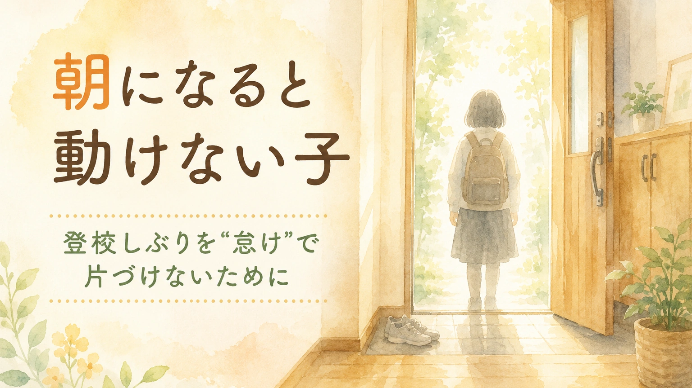

この記事は、朝の登校しぶりについて、家庭で子どもを責めずに状況を整理し、学校や関係機関と相談しやすくするためのコラムです。診断や治療、法的判断の代わりではありません。
朝になると、子どもが動けなくなる。布団から出ない。着替えの前で止まる。ランドセルや制服を見ると表情が固まる。腹痛や頭痛を訴える。「行きたくない」と泣く。
そんな朝が続くと、保護者は本当に苦しくなります。「このまま不登校になるのではないか」「休ませたら癖になるのではないか」「自分の対応が甘いのではないか」。そう考えてしまうのは、子どものことを大切に思っているからでもあります。
ただ、朝に動けない姿は、怠けや甘えだけで説明できるものではありません。学校での疲れ、不安、見通しの持ちにくさ、感覚の負荷、人間関係、学習のつまずき、体調の問題などが、朝の体や行動に出ていることがあります。
この記事で大切にしたいのは、「行かせるか、休ませるか」を急いで決めることではありません。まず、朝に何が起きているのかを、子どもを責めない言葉で整理することです。
1. 「怠け」と決めつける前に
朝、子どもが動かない姿を見ると、大人は焦ります。「早くしなさい」「行けば何とかなる」「休み癖がつく」と言いたくなることもあります。保護者にも仕事や家事、きょうだいの準備がある朝は、冷静でいること自体が難しい時間です。
だからこそ、最初に保護者を責めない視点が必要です。朝の混乱は、子どもだけでなく、家庭全体に負荷をかけます。保護者が追い詰められるのは自然なことです。
そのうえで、子どもが朝に動けないときは、単なる怠けと決めつける前に、背景を見ます。前の日まで学校で強く緊張していた。授業についていけない不安がある。友達関係で気を張っている。給食や音、におい、人混みがつらい。先生に注意されることを怖がっている。そうした負荷が、朝の体や行動に出ていることがあります。
「行きたくない」と言う子の中には、理由をうまく説明できない子もいます。本人にも、何がつらいのか言葉になっていない場合があります。最初から「理由を言いなさい」と問い詰めるより、朝に出ているサインを丁寧に見ることが、支援の入口になります。
2. 朝に出やすいサイン
登校しぶりは、「学校に行きたくない」という言葉だけで現れるわけではありません。体、表情、行動、沈黙として出ることがあります。
朝に見られやすいサイン
- 布団から出られない
- 起きているのに、着替えや洗顔の前で止まる
- ランドセル、制服、時間割を見ると表情が固まる
- 腹痛、頭痛、吐き気、だるさ、めまいを訴える
- 急に怒る、泣く、物に当たる
- 「行かない」と言うが、理由は言えない
- 何を聞いても黙る
- 玄関までは行くが、そこから動けない
- 学校の近くで足が止まる
- 日曜の夕方や夜から不安定になる
これらのサインは、本人が保護者を困らせるために出しているとは限りません。「行かなければいけない」と本人もわかっているのに、体が動かない。その状態が、朝の登校しぶりとして見えている場合があります。
大人が見たいのは、「行く気があるか」だけではありません。行くために必要な心身の余力が残っているかです。
3. 前日・帰宅後・休日も見る
朝の問題に見えていても、原因が朝だけにあるとは限りません。学校での緊張や疲労が、帰宅後や翌朝に遅れて出ることがあります。
学校では「頑張れている」と見える子ほど、家庭で崩れることがあります。教室では静かに座っている。先生の指示に従っている。友達と大きなトラブルを起こしていない。その一方で、帰宅後に泣く、怒る、何もできない、宿題に取りかかれない、休日に寝込むという形で疲れが出ることがあります。
| 見る時間帯 | 確認したいこと |
|---|---|
| 前日の夜 | 寝つき、明日の不安、時間割への反応、宿題での荒れ方 |
| 朝 | 起床、着替え、朝食、トイレ、ランドセル、玄関で止まる場面 |
| 登校中 | 家を出た後の表情、学校に近づくときの変化、付き添いの必要性 |
| 学校 | 授業、休み時間、給食、体育、音楽、友達関係、先生との関係 |
| 帰宅後 | 疲労、怒り、涙、無言、宿題への反応、きょうだいへの当たり方 |
| 休日 | 寝込む、外出を嫌がる、日曜夕方から不安定になる |
朝だけを切り取ると、「わがまま」に見えることがあります。しかし、一日全体、一週間全体で見ると、本人がかなり無理をしていることが見えてくる場合があります。
4. 背景にあるかもしれない負荷
登校しぶりの背景は一つではありません。複数の要因が重なっていることもあります。「なぜ行けないの」と一つの理由を探すより、いくつかの負荷が積み重なっていないかを見ることが大切です。
| 背景にあるかもしれないこと | 見えやすいサイン | 支援の方向 |
|---|---|---|
| 見通しの不安 | 予定変更、行事、初めての活動の前に不安定になる | 予定を見える形にする。変更を早めに知らせる |
| 学習のつまずき | 特定の教科がある日に止まる。宿題で荒れる | 課題量、説明方法、板書、宿題の出し方を相談する |
| 人間関係の不安 | 休み時間、班活動、登下校の話題を避ける | 誰と、どの場面で不安が出るかを学校と共有する |
| 感覚の負荷 | 音、におい、人混み、給食、服の感触で疲れる | 座席、休憩場所、給食量、服装、イヤーマフ等を検討する |
| 失敗への不安 | 発表、テスト、体育、係活動の前に固まる | 事前練習、選択肢、代替方法、成功しやすい役割を作る |
| 生活リズムの乱れ | 夜眠れない、朝起きられない、休日に大きく崩れる | 睡眠、食事、起床時刻、画面時間を無理なく整える |
| 体調の問題 | 頭痛、腹痛、吐き気、めまい、強いだるさが続く | 小児科など医療機関への相談も検討する |
どれか一つに決めつける必要はありません。「月曜だけつらい」「給食のある日は止まる」「体育の前日は眠れない」など、パターンを探すことで、支援の入口が見えてきます。
5. 家庭でできる朝の支援
朝の支援で大切なのは、子どもを説得し続けることではありません。まず、朝に判断する量を減らすことです。
朝は、本人も保護者も余力が少ない時間です。その時間に、登校するか、何を着るか、何を持つか、どの順番で動くかを全部決めようとすると、それだけで動けなくなる子がいます。
前日にできること
- 時間割と持ち物を一緒に確認する
- 服、靴下、ハンカチ、給食セットを決めておく
- 明日の不安を一つだけ聞く
- 苦手な活動がある日は、どう乗り切るかを先に決める
- 登校できなかった場合の連絡手順を、保護者側で確認しておく
朝にできること
- 言葉を短くする
- 責める言葉より、次の一動作を示す
- 「着替える」「顔を洗う」「水を飲む」など、行動を小さく分ける
- タイマーやチェックリストを使い、見通しを作る
- 泣いたり固まったりしたときは、一度刺激を減らす
朝の声かけ例
「まず靴下だけはこう」
「水を一口飲もう」
「ランドセルは玄関まででいいよ」
「今日は学校に着いたら、先生に一言だけ伝えよう」
動けない子に必要なのは、気合いではなく、動き出すための小さな足場です。「学校まで行く」を最初の目標にすると大きすぎる場合は、「起きる」「着替える」「玄関に行く」「校門まで行く」「保健室に行く」など、段階を分けて考えます。
もちろん、毎回うまくいくわけではありません。怒ってしまった日があっても、あとで言い直すことはできます。保護者が完璧でなくても、親子の関係を修復する機会は残っています。
6. 学校に相談するときの伝え方
登校しぶりが続くと、保護者は学校に相談すること自体をためらうことがあります。「家庭の問題と思われるのではないか」「休ませすぎと言われるのではないか」「先生に迷惑をかけるのではないか」と感じるからです。
しかし、朝に動けない背景が学校生活にある場合、家庭だけで対応することは難しくなります。学校には、朝の様子だけでなく、どの場面が負荷になっていそうかを共有します。
相談の切り出し方
「朝になると動けない日が増えています。家庭では怠けと決めつけず、何が負担になっているのかを整理したいと思っています。学校での様子と家庭での様子を合わせて、本人が学校とつながりやすくなる条件を一緒に考えたいです。」
学校での負荷を確認したいとき
「特定の教科や活動の前日に不安定になることがあります。学校で、本人が緊張している場面や、疲れが出ている場面がないか教えていただけますか。」
登校方法を調整したいとき
「いきなり教室に入ることが難しい日があります。保健室、相談室、別室、遅れて登校する形など、段階的に学校につながる方法を相談できないでしょうか。」
家庭での様子を伝えるとき
「学校では頑張っているように見えるかもしれませんが、帰宅後に強く疲れが出ています。朝だけでなく、帰宅後の様子も含めて見ていただけると助かります。」
相談の目的は、学校を責めることではありません。子どもがどこで疲れているのかを、家庭と学校で同じ地図にしていくことです。
7. 体調不良や強い不安が続くとき
朝の登校しぶりに、腹痛、頭痛、吐き気、めまい、強いだるさなどが続く場合は、心の問題だけで説明しないほうがよいことがあります。体の状態が関係している場合もあるからです。
「学校に行きたくないから仮病を使っている」と決めつける前に、体調の記録を取り、小児科などに相談することも選択肢です。受診するときは、次のような情報があると整理しやすくなります。
- 症状が出る時間帯
- 平日と休日の違い
- 睡眠時間と寝つき
- 食欲、便通、体重の変化
- 学校行事や特定の教科との関係
- 休むと症状がどう変わるか
- 登校した日の帰宅後の疲れ方
早めに相談したいサイン
強い腹痛や頭痛が続く、食事や睡眠が大きく崩れている、自傷がある、「消えたい」「いなくなりたい」などの言葉が出る、家庭内で安全を保ちにくい。こうした場合は、家庭内の工夫だけで様子を見る段階を超えていることがあります。学校、スクールカウンセラー、医療機関、自治体の相談窓口などに早めにつながってください。緊急性があると感じる場合は、地域の救急相談や緊急窓口も含めて確認してください。
医療につなぐことは、「学校の問題ではない」と切り離すことではありません。体、心、学校環境を合わせて見るための一つの手段です。
8. 家庭で整理しておきたいメモ
朝の登校しぶりは、その場で対応しようとすると親子ともに消耗します。落ち着いている時間に、次のようなメモを作っておくと、学校や医療機関への相談が具体的になります。
メモの目的は、子どもを管理することではありません。「朝に何が起きているのか」を、感情ではなく事実として見えるようにすることです。保護者が学校に説明するとき、自分だけで抱え込まないための支えにもなります。
9. 朝に避けたい言葉
朝は、保護者も追い詰められやすい時間です。だからこそ、できるだけ避けたい言葉を先に決めておくことが役に立ちます。
| 避けたい言葉 | 置き換えたい言葉 |
|---|---|
| 「怠けないで」 | 「今、体が動きにくいんだね。まず一つだけやろう」 |
| 「行けば何とかなる」 | 「学校で何が一番心配か、一つだけ教えて」 |
| 「休み癖がつくよ」 | 「今日はどう学校とつながるか考えよう」 |
| 「みんな行っているよ」 | 「あなたにとって何が大変かを一緒に見よう」 |
| 「理由を言いなさい」 | 「言葉にしにくければ、選択肢から選んでいいよ」 |
もちろん、保護者が毎朝完璧に対応する必要はありません。怒ってしまった日があっても、あとで言い直せばよいのです。
「朝はお母さん／お父さんも焦って強く言いすぎた。でも、あなたが困っていることは一緒に考えたい。」
まとめ：朝に動けない姿は、支援を考える入口になる
朝になると動けない子を、「怠け」「甘え」「わがまま」と決めつけると、本人の中で起きている不安や疲れが見えにくくなります。
もちろん、学校につながることは大切です。しかし、「登校するか、休むか」だけで考えると、親子ともに追い詰められます。大切なのは、何が負荷になっているのか、どの条件なら少し動けるのかを整理することです。
朝の姿だけでなく、前日の夜、帰宅後、休日、学校での様子を合わせて見る。家庭だけで抱え込まず、担任、養護教諭、特別支援教育コーディネーター、スクールカウンセラー、必要に応じて医療機関ともつながる。その積み重ねが、子どもを責めずに支える土台になります。
朝に動けない姿は、親を困らせるための行動とは限りません。「もう限界に近い」「何かがつらい」「助けてほしい」という、子どもなりのサインかもしれません。そのサインを、叱る材料ではなく、支援を考える入口にしていきましょう。
登校しぶりや学校生活の不安を、家庭だけで抱え込まないために。まなびの森教育研究所では、保護者の方の困り感を整理し、学校との相談で伝えたいことを一緒に言葉にしていきます。
保護者向け相談ページを見る